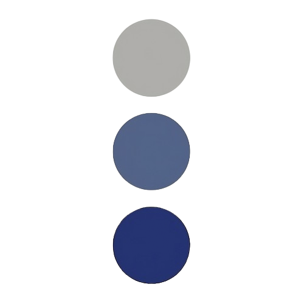

 I'm Luke, nice to meet you.
I am an engineer, focusing on AI models and infra, and healthtech founder. I enjoy travel, aggressive CrossFit training, pondering consciousness, and day-dreaming about the future with people who want to build it. I am ENTJ, according to MBTI tests.
Present
I am working on building universally portable compute at Lemurian Labs.
Also, I am a founder and CTO of ReCODE Medical, a comprehensive revenue cycle management solution for medical procedures from prior authorization to charge capture.
My current research focuses are robotic foundation models and AI-powered medical coding.
Past
I graduated Summa Cum Laude from the University of Florida with a B.S. in Computer Engineering. There, I received the ECE Dept. Outstanding Student Award.
I was the first employee at Metalware (YC S23), where I fell in love with startups (thanks Ryan) and learned what good code is (thanks Andrew).
I worked in Texas Instrument's Machine Learning Lab, where we brought a TVM compiler to a novel RISCV + ML Accelerator Processor.
I was a Senior Deep Learning Engineer at Untether AI (acquired by AMD). I focused on Torch/ONNX model ingestion, optimization, and MLIR compilation for Untether's spatial architecture. I also developed the large-scale compiler testing framework by extending TurnkeyML, which served as the backbone of Untether's CI/CD pipeline.